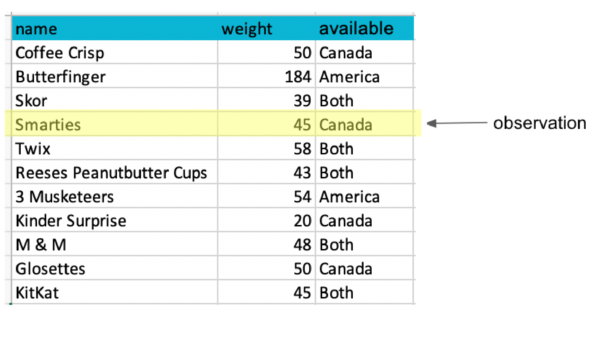
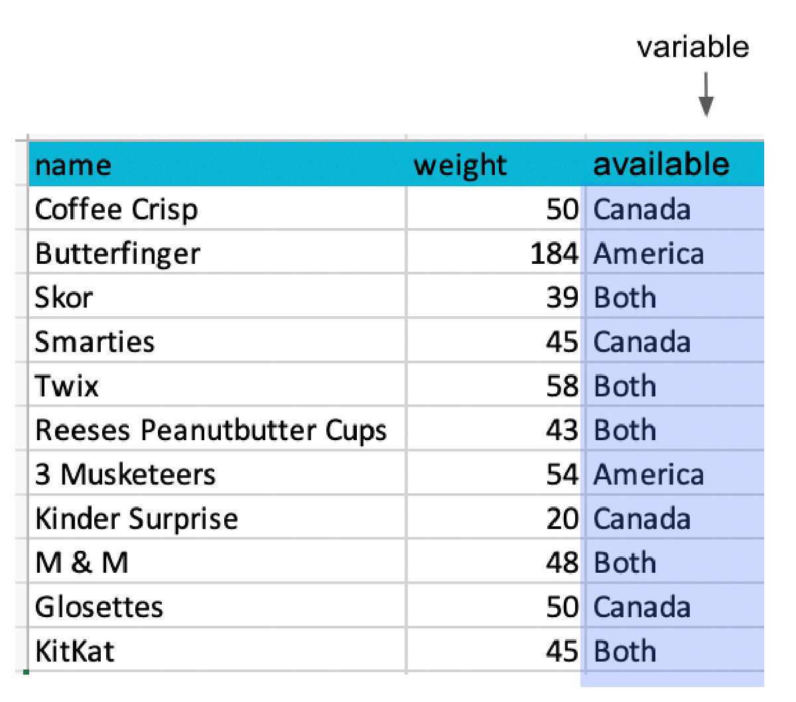

Lecture 3: Collections
BAA1118 - Foundations of Programming for Analytics & AI
For Today
Requirements
- ✅ Assigning values to names
- ✅
int,float,str,bool - ✅ Reading an error message without panicking
Programme
- Lists
- Indexing and slicing
- Dictionaries, tuples and sets
- Nested structures
- How data is stored on disk
The Problem With One Value Per Name
This works for 3 months. It does not work for 3,000 customers.
- You cannot loop over separate names
- You cannot ask “how many are there?”
- You cannot sort them
Collections solve this: one name, many values.
1. Lists
Creating a List
Square brackets, values separated by commas.
A list can hold anything, even a mix of types, but a useful list holds one kind of thing.
Adding and Removing
['Ireland', 'France', 'Spain', 'Italy']
['Ireland', 'Germany', 'France', 'Spain', 'Italy']Methods Change the List Itself
This is the big difference with strings.
Important
list.sort() sorts in place and returns None. sorted(list) returns a new sorted list. Writing scores = scores.sort() destroys your data.
Your Turn: A Shopping List
- Create a list called
basketwith these prices:4.50,12.99,3.25,8.00 - Add
19.99at the end - Remove
3.25 - Print how many items are in the basket, the total, and the most expensive item
- Print the basket sorted from cheapest to most expensive, without changing
basket
Solution
2. Indexing and Slicing
Indexing
| Value | Ireland | France | Spain | Italy | Portugal |
|---|---|---|---|---|---|
| Index | 0 | 1 | 2 | 3 | 4 |
| From the end | -5 | -4 | -3 | -2 | -1 |
Slicing
list[start:stop:step] returns a new list, from start up to but not including stop.
['France', 'Spain', 'Italy']
['Ireland', 'France']
['Italy', 'Portugal']Leaving a side empty means “all the way”. [::-1] works on strings too.
Mutability and the Copy Trap
Lists are mutable: an element can be replaced in place.
[99, 2, 3]b = a gives the same list a second name. To copy:
Warning
This trap reappears in week 7 with DataFrames, where pandas warns you about it explicitly.
Your Turn: Slicing Quarters
- Print the first quarter (first 3 months) and its total
- Print the last quarter and its total
- Print every third month
- Print the list in reverse
- Replace the value for June (index 5) with
152and print the new annual total
Solution
[120, 135, 148] 403
[190, 205, 240] 635
[120, 160, 171, 190]
[240, 205, 190, 180, 168, 171, 149, 155, 160, 148, 135, 120]
20243. Dictionaries, Tuples and Sets
The Problem With Positions
What is customer[2]? You have to remember. In six months, you will not.
A dictionary stores values by name instead of by position.
Curly braces, unique keys, and values of any type, even lists. Think of it as a single row of a spreadsheet with its column headers.
Reading and Writing
DamienExploring a Dictionary
dict_keys(['name', 'city', 'spend'])
dict_values(['Damien', 'Dublin', 1400.0])Tuples: Lists That Cannot Change
Round brackets instead of square ones.
Use a tuple when the collection is not supposed to change: a coordinate, a date, a pair of values returned by a function.
Unpacking
This works for lists too, and is used constantly:
You will see it in week 9 as fig, ax = plt.subplots().
Sets: Unique Values Only
{'South', 'East', 'North'}
3Sets answer “which distinct values are in this column?”, and compare groups with no library at all:
The Four Collections
| Syntax | Ordered | Changeable | Duplicates | |
|---|---|---|---|---|
| list | [1, 2, 3] |
yes | yes | yes |
| tuple | (1, 2, 3) |
yes | no | yes |
| dict | {"a": 1} |
yes | yes | keys: no |
| set | {1, 2, 3} |
no | yes | no |
In practice: list for a column of values, dict for a labelled record, set for uniqueness, tuple for fixed pairs.
Your Turn: A Customer Record
- Create a dictionary
customerwith keysid,name,cityandorders, whereordersis a list of order amounts:45.0,120.5,33.25 - Add a new order of
78.0to the list inside the dictionary - Print the number of orders and the total spent
- Print the average order value, rounded to 2 decimals, using an f-string
- Safely print the value of a key
emailthat does not exist
Solution
4 276.75
Average order: 69.19
no email on file4. Nested Structures
A List of Dictionaries
This is how almost all real data arrives, from an API, a JSON file, or a database.
Why This Matters
[{'name': 'Damien', 'city': 'Dublin', 'spend': 1250.5},
{'name': 'Aoife', 'city': 'Cork', 'spend': 890.0},
{'name': 'Liam', 'city': 'Dublin', 'spend': 2100.75}]Turn your head sideways: names across the top, one record per row. This is a table.
A Table Has Two Directions
Each row is one observation: one product, one customer, one country-year.

Each column is one variable: one thing measured about every observation.

Source: UBC Master of Data Science, Programming in Python for Data Science
Your Turn: Nested Data
- Print the number of records
- Print the region of the third record and the units of the last
- Add a fifth record for March, North, 150 units
- Print the total units of the first two records only
Solution
sales = [
{"month": "Jan", "region": "North", "units": 120},
{"month": "Jan", "region": "South", "units": 95},
{"month": "Feb", "region": "North", "units": 138},
{"month": "Feb", "region": "South", "units": 101}
]
print(len(sales))
print(sales[2]["region"])
print(sales[-1]["units"])
sales.append({"month": "Mar", "region": "North", "units": 150})
print(sales[0]["units"] + sales[1]["units"])4
North
101
215Adding up the whole column still needs a loop. That is next week.
5. Data on Disk
Where Data Actually Lives
Everything so far has been typed into the notebook. Real data arrives as a file, and you will meet four formats over and over.
| Format | Looks like | Holds |
|---|---|---|
.csv |
text, one row per line | one table |
.json |
text, nested brackets | anything, even nested records |
.xlsx |
an Excel document | sheets, formatting, formulas |
.parquet |
a binary data file | one table, typed and compressed |
Today you only need to recognise them and know what shape of Python each one maps onto. Reading them comes in week 5.
CSV: A Table as Text
Comma Separated Values. Open it in a text editor and you can read it:
roasted_stores.csv
- First line: the column names
- One line per row, values separated by commas
- No types.
42is the text “42” until something decides otherwise - Nothing else: no formulas, no colours, no second sheet
That is a list of dictionaries written down. It is the format you should ask for.
The CSV Trap
a_real_export.csv
- A comma inside a value, so the value is quoted
- A quote inside a quoted value, so it is doubled
- An empty value at the end of the line
- Accented characters, which need the file to be saved as UTF-8
This is why you never split a CSV by hand with .split(","). A proper reader handles all of it, and you will use one from week 5.
JSON: Python, Written Down
JavaScript Object Notation. Look closely at this:
customers.json
You wrote that ten minutes ago. JSON is a list of dictionaries, saved as text. Square brackets for a list, curly braces for a dictionary, colons for keys.
JSON: Python, Written Down
The json module turns one into the other. Imports come in week 5, so read this rather than worrying about the first line:
<class 'list'>
<class 'dict'>
61.4Almost every website and app sends its data as JSON, precisely because it can hold nested structures that a table cannot: a customer with a list of orders inside them.
Excel: A Document, Not a Data File
An .xlsx file is a zipped folder of XML. It can hold:
- Several sheets
- Formulas that recalculate
- Merged cells, colours, comments, charts, pivot tables
- Three different date formats in the same column
Warning
Excel is excellent for people and awkward for code. When you are given one, expect a title row above the headers, a blank column somebody used as a spacer, and totals in the middle of the data. Half of week 7 is dealing with exactly that.
Parquet: The One Built for Data
- Typed: a date column comes back as a date, not as text
- Columnar: reading one column of a hundred does not read the other ninety-nine
- Compressed: usually a third the size of the same CSV
- Unreadable by humans, and that is the whole trade
It is the standard for data that is passed between systems rather than emailed to a person. You will meet it in any serious data job, and almost never in an inbox.

Thanks for your attention and don’t hesitate to ask if you have any questions!